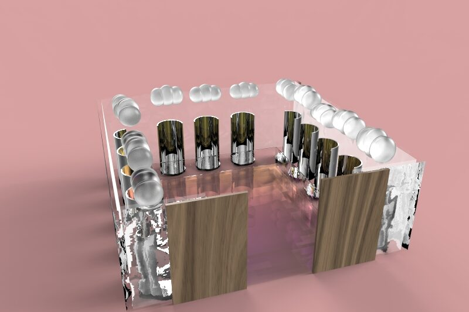
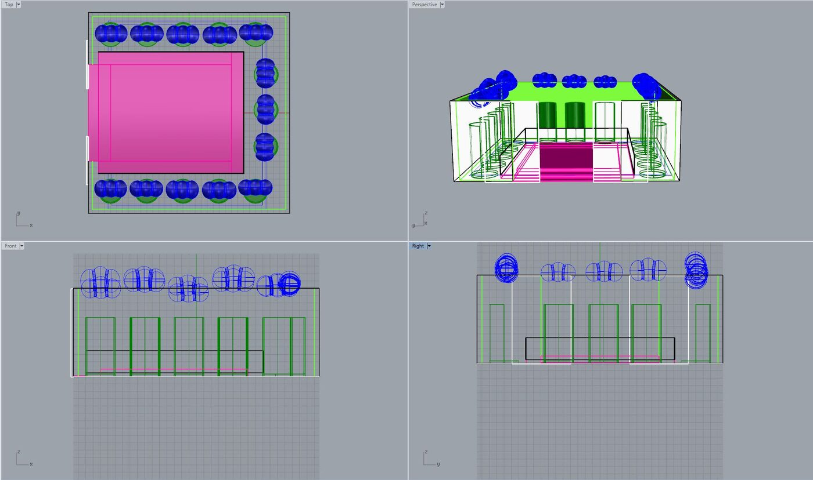
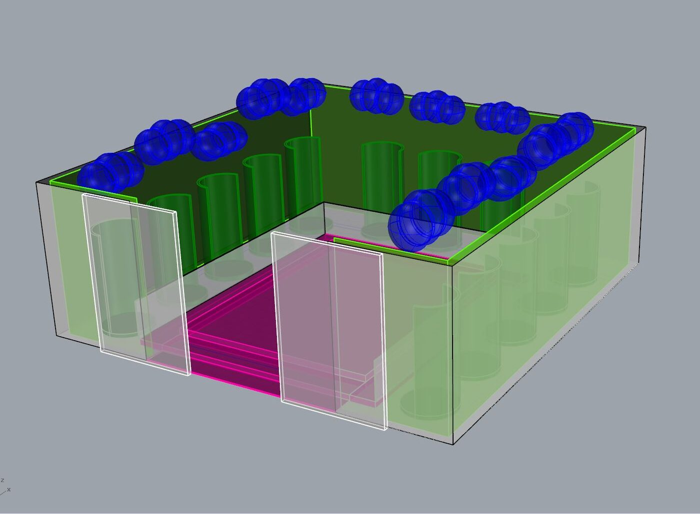
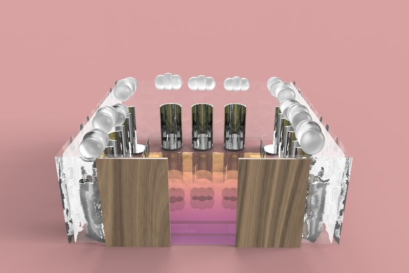
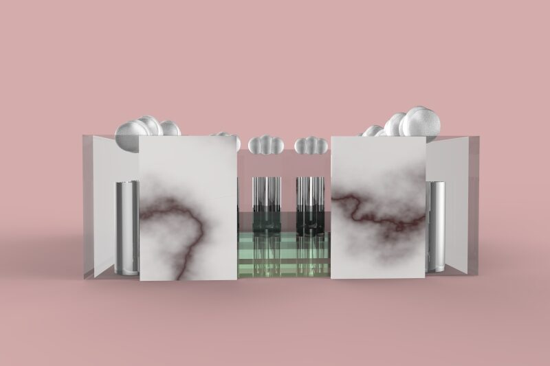
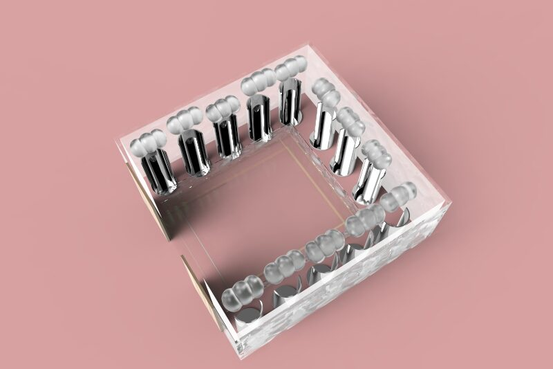
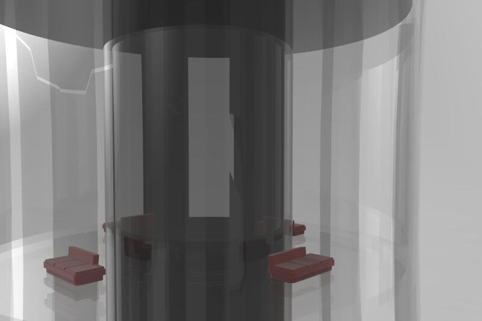

Time is Knowledge
Designing Change · School of the Art Institute of Chicago · Summer 2016

The question
How does the design of a space shape how people learn in it?
Research
I photographed people learning outside the classroom: through play, curiosity, and each other. That led to two principles: learning through experience and learning through interaction with others. I also listed what I liked and disliked about school, and three problems stood out: curriculum, environment, and routine.
For secondary research I studied EPIC High Schools in New York City, including Danish Kurani's “sunken pit”: community-centric seating that puts student-led discussions on the same level, movable modules, and adaptable seating for project-based lessons.
The idea
Time is Knowledge replaces memorizing with experience. Students pick a subject, step into a teleporting “Cloud,” and live through another time and place, facing its challenges firsthand without having to stay there.
Design decisions
- A minimalist room, as a contrast to the complex worlds students visit.
- Transparent walls, so students stay connected to reality during the fantasy.
- A flow from waiting area → teleport pods → worlds.
Looking back
Years before I built AR apps, I was already designing spaces that blend the physical and the virtual.





